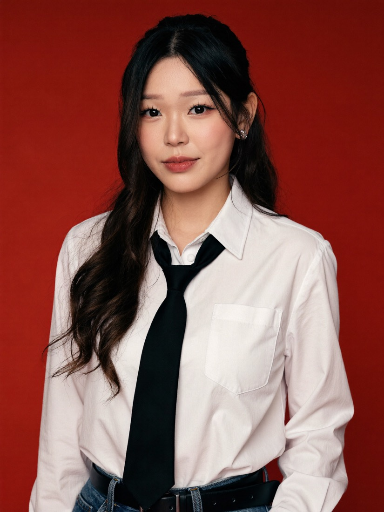

A full set of professional headshots, LinkedIn profile photos, team-page shots, speaker photos, generated from a folder of your own pictures. Soul 2.0 locks your real face, so they're genuinely you, in clean lighting and a few outfits, without booking a photographer. Here are real examples:

Every one of these is me, generated from a folder of my own photos. No camera, no studio, no photographer.
https://mcp.higgsfield.ai/mcp, then Connect and approve the sign-inSo Claude can see your pictures, use Claude Code and start a new chat in the folder where your photos live (put 10 to 20 clear photos of yourself in one folder, say a folder called me). A few clean, front-on photos help the most.
Ask Claude to build your character with Higgsfield's Soul 2.0, pointed at that folder:
Using the Higgsfield MCP, create a Soul 2.0 character of me from the photos in this folder [point to your folder]. Keep it photoreal and true to my face.While it builds your character, save 3 to 6 corporate headshots or LinkedIn photos you like, note the lighting, the background, the pose, the crop.
Paste the references in and ask Claude to make them as you:
Give me these headshots, but as me, using my character. Clean professional lighting, neutral background, and a few different outfits. Give me the full set.Claude renders a full set of professional headshots in one go. Ask for a different background or outfit and it keeps going.
You don't have to start on Pinterest. If you already have a shot you love (a reference, or even one Soul just made you), have Claude reverse-engineer it into a reusable prompt. Paste the image in and ask:
Look at this photo and describe it as a detailed image prompt I can reuse to recreate the same look with my own character. Cover: the pose and crop, the outfit, the background and its colour, the lighting, the mood, and the hair and makeup. Write it as one clean prompt, in plain words, no jargon.Now you have an exact recipe you can run again, tweak, or hand straight back to Soul with your character. This is how you build a little library of looks that always come out right.
These are the exact prompts behind the three shots at the top. Run them with your own character, and swap any detail (outfit, background colour, pose) for your own.
A clean professional studio headshot of me, standing three-quarter, hands relaxed in my trouser pockets. Cream silk button-up shirt, tailored black trousers. Soft, even studio lighting on a warm neutral-grey seamless backdrop. Natural, approachable smile, hair in a low side ponytail with face-framing strands. High-end corporate photography, sharp, shallow depth of field. Keep my face true to my reference photos.A polished editorial headshot of me, seated, arms softly crossed, looking straight to camera. Black sleeveless mock-neck top, a slim watch and a couple of silver rings. Smooth lavender-to-mauve gradient studio background with a soft glow behind me. Refined natural makeup, hair half-up with long waves. Clean beauty lighting, magazine quality. Keep my face true to my reference photos.A bold creative portrait of me on a deep crimson-red seamless background. Crisp white button-up shirt with a slim black tie loosened at the collar, tucked into denim with a black belt. Confident, direct gaze with a soft smile, hair half-up with loose waves. Modern editorial studio lighting, sharp and clean, fashion-magazine styling. Keep my face true to my reference photos.📸 Higgsfield: higgsfield.ai (the MCP connect URL is https://mcp.higgsfield.ai/mcp)
🤖 Claude: claude.com (connect Higgsfield under Customize, then Connectors)
Build AI systems with me through recorded lessons you can follow at your own pace. Join the waitlist for first access and the founding price.